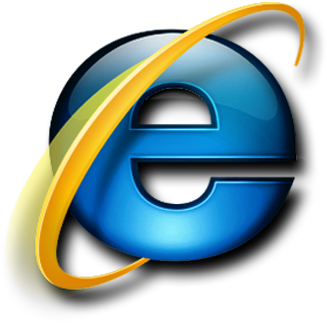

Internet Explorer
ArquivoEditarExibirFavoritosFerramentasAjuda
Bem-vindo ao meu espaço na web
Olá, eu sou o Yago.
Este portfólio transforma minhas experiências, habilidades e projetos em um desktop inspirado no Windows XP.
Sobre mim
Sou estudante e desenvolvedor, interessado em criar interfaces úteis, criativas e fáceis de usar.
Projetos em destaque
Meu Computador
Arquivo Editar Exibir Favoritos Ferramentas Ajuda
🔍 Pesquisar📁 Pastas
EndereçoMeu Computador
Arquivos armazenados neste computador
Unidades de disco rígido
Meus Projetos
Meus Documentos
Minhas Imagens
As imagens dos projetos serão exibidas aqui conforme forem adicionadas.
🖼️Galeria em construção
Tecnologias
Ver projetos no GitHubMicrosoft Windows XP [versão 5.1.2600]
(C) Copyright 1985-2001 Microsoft Corp.
Digite help para ver os comandos disponíveis.
sobre_mim.txt - Bloco de notas
Arquivo Editar Formatar Exibir Ajuda
Olá!
Meu nome é Yago. Sou estudante e desenvolvedor, com interesse em criar aplicações web e interfaces que unam criatividade e utilidade.
Atualmente estudo HTML, CSS, JavaScript, Python, Bootstrap e Django.
Este portfólio foi construído como uma experiência inspirada no Windows XP para apresentar meus projetos e habilidades de uma forma diferente.
Obrigado pela visita!
Painel de Controle
Escolha uma categoria
Conheça as tecnologias, ferramentas e áreas que fazem parte da minha formação.
Desenvolvimento Web
HTML, CSS, JavaScript e Bootstrap
Linguagens
JavaScript e Python
Banco de Dados
Modelagem e integração com aplicações
Ferramentas
Git, GitHub e desenvolvimento responsivo
Formação
Aprendizado contínuo e projetos práticos